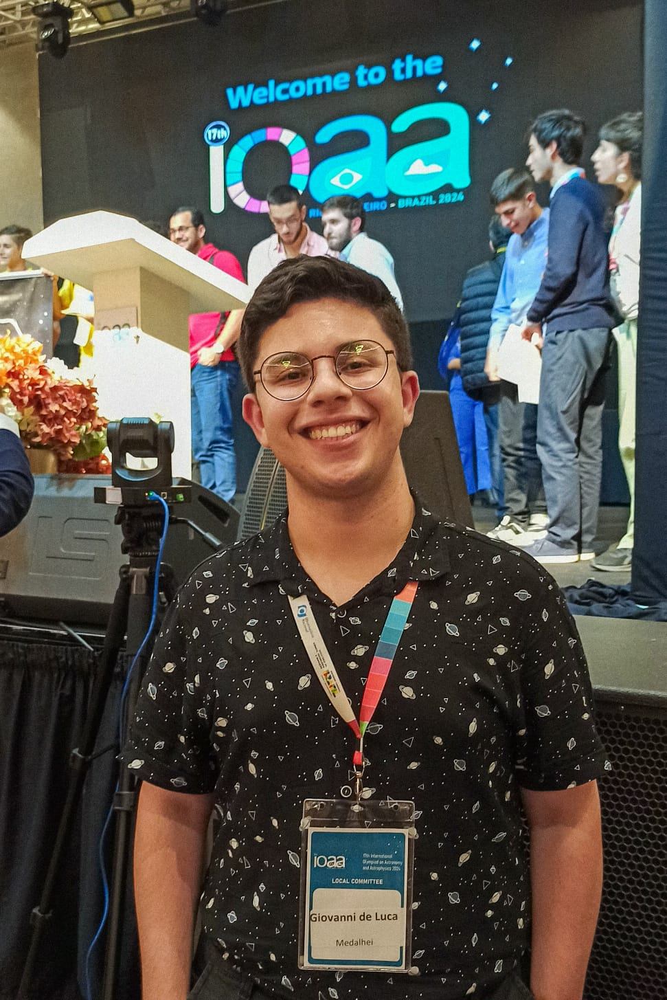

Multimedalhista olímpico e recordista nacional da MOBFOG, possuo uma formação técnica em Eletroeletrônica pelo SENAI Americana e atuo como Auxiliar de Marketing e Design na Medalhei Olimpíadas Científicas. Atualmente, estou cursando Engenharia da Computação na Facens graças às olimpíadas científicas e às oportunidades que elas trazem.
Dedicado à promoção da educação tecnológica e inovadora, convicto no poder transformador das olimpíadas científicas, como evidenciado pelo meu histórico acadêmico e olímpico. Com minhas habilidades em planejamento, desenvolvimento de projetos e liderança, estou constantemente em busca de contribuir com o crescimento e o impacto positivo no mundo através da Educação e da Ciência.
